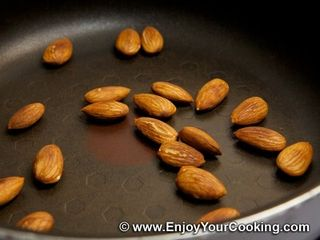
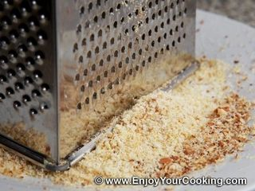
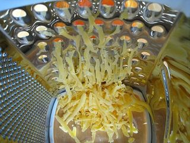
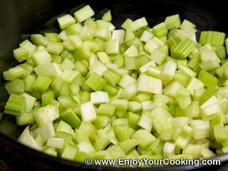
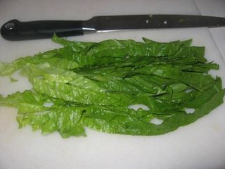
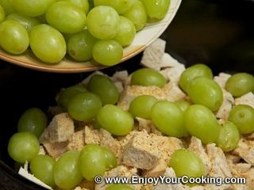
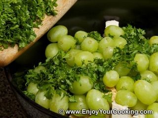
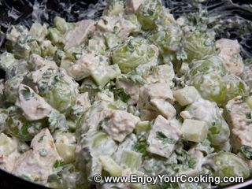

Шаг 1: подготавливаем ингредиенты.
Для начала, чтобы не бегать в поисках продуктов по всей кухне, уложите на кухонный стол все необходимые ингредиенты из которых вы будите готовить салатик. Вам нужен сочный спелый виноград без косточек, он даст нежность вашему салату. Куриное филе, от которого будет зависеть сытность салата. Стебли сельдерея, богатые витаминами, минералами, эфирными маслами и кислотами, этот ингредиент повысит выработку желудочного сока. Миндаль в виде афродизиака улучшит ваше настроение на все 100%. Петрушка будет стимулировать пищеварение. Твердый сыр предаст особую изюминку в виде тонкого молочного аромата. Салатные листья, имеющие богатое количество полезных веществ помогут вам красиво оформить ваше блюдо. Ну и конечно, вам понадобиться соль и заправка. Что касается последнего ингредиента, то это может быть сметана, сливки, майонез и даже обычные растительные жиры, например оливковое или подсолнечное масло.
Шаг 2: варим и нарезаем курицу.
Для начала займитесь курицей так как она готовиться намного дольше, чем все остальные ингредиенты. Возьмите куриную грудку и промойте ее под струей холодной проточной воды от разного рода загрязнений. Вымытое филе уложите на разделочную доску, зачистите мясо от излишков жира и плевы. После переложите куриный полуфабрикат в глубокую кастрюлю и залейте мясо чистой дистиллированной водой так, чтобы жидкость была выше уровня филе на 10 - 13 сантиметров. Поставьте кастрюлю, на плиту, включенную на средний уровень, добавьте по вкусу соль и доведите воду до кипения.
Варите куриное филе в течение 20 – 25 минут до полной готовности, периодически снимая шумовкой пенку, скапливающуюся на поверхности бульона. По истечению нужного времени выключите плиту, достаньте мясо из кастрюли с помощью той же шумовки и переложите на тарелку. Дайте куриному мясу полностью остыть, после уложите его на чистую разделочную доску и, используя нож, нарежьте крупными кубиками с примерным диаметром до 2 сантиметров. Нарезку переложите в глубокую тарелку. А пока вариться курица, вы можете подготовить остальные ингредиенты.
Шаг 3: обжариваем и измельчаем миндаль.

Включите плиту на средний уровень и поставьте на нее сковороду. Раскалите ее до 100 градусов и закиньте на дно емкости нужное количество миндаля. Обжарьте орешки, интенсивно помешивая их кухонной лопаткой в течение 5 минут.

После переложите миндаль на тарелку, дайте остыть, натрите на мелкой терке и пересыпьте ароматную крошку обратно в тарелку, в которой ранее находились жареные орехи.
Шаг 4: измельчаем сыр.

Удалите упаковку с твердого сыра любой торговой марки. Уложите ингредиент на разделочную доску и срежьте с сыра парафиновую корку, после натрите его на мелкой терке прямо в глубокую тарелку.
Шаг 5: нарезаем зелень и сельдерей.

Петрушку, стебли сельдерея и салатные листья промойте под проточной водой от песка и других загрязнений. Встряхните ингредиенты над раковиной от лишней жидкости. Затем обсушите сельдерей и салатные листья бумажными кухонными полотенцами. После поочередно уложите их на разделочную доску и нарежьте. Сельдерей нашинкуйте мелким кубиком с примерным диаметром до 7 миллиметров.

Листья салата нарежьте крупной соломкой с примерной длиной до 15 сантиметров, и толщиной до 2 сантиметров. Зелень петрушки просто мелко нашинкуйте. Разложите ингредиенты по отдельным тарелкам.
Шаг 6: подготавливаем виноград.
Зеленый виноград без косточек, промойте под проточной водой, и удалите виноградинки со стеблей. Теперь действуйте по желанию, вы можете разрезать каждую виноградинку на 2 половинки или оставить целыми. В первом варианте сладкий ингредиент быстро пустит сок, который пропитает все остальные составляющие салата. Во втором варианте есть своя изюминка, раскусывая виноградинку во время дегустации салата, вы получите очень приятное сочетание - солоноватый привкус, сплетающийся со сладостью. Выбрав один из этих вариантов, вы не прогадаете не в том не в другом. Уложите виноградинки в глубокую тарелку.
Шаг 7: смешиваем ингредиенты.

Осталось всего несколько штрихов, и вы сможете преподнести свой кулинарный шедевр вашему любимому человеку. В глубокую салатницу уложите нарезанный сельдерей, куриную грудку, перетертый миндаль и виноград.

Затем добавьте свежую зелень петрушки, и перемешайте ингредиенты деревянной кухонной ложкой до однородности.
Шаг 8: заправляем салат.
Ваш салат почти готов остался выбор заправки, это может быть сметана с кисловатым привкусом, сладкие домашние сливки или майонез со свойственным ему пряным привкусом. Так же если вы не любитель жирной пище можете заправить ваш салат растительными маслами, например оливковым или подсолнечным. Выбрав заправку добавьте ее в салатницу к почти готовому салату.

Затем посолите ваше блюдо по вкусу, не забывая о том, что вы солили мясо во время варки и повторно перемешайте салат деревянной кухонной ложкой до однородности. После на большую плоскую тарелку уложите нарезанные салатные листья в виде подушки. Сверху на них аккуратно выложите салат, помогая себе столовой ложкой, и присыпьте его натертым сыром.